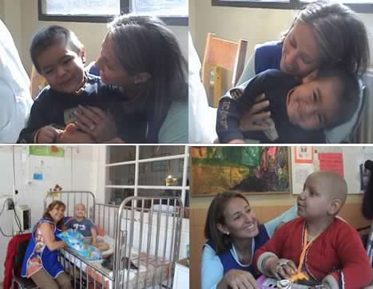
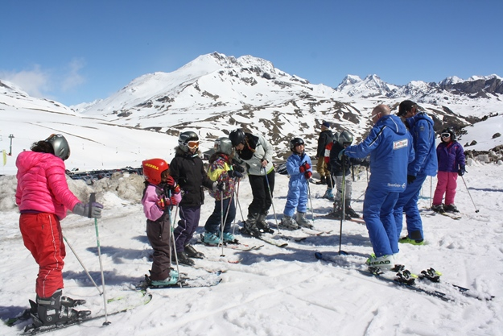

Jornada Voluntariado
Este voluntariado trabaja en el Hospital Luis Calvo Mackenna. Su objetivo es acoger a los padres e hijos, brindándoles apoyo y acompañamiento. Las voluntarias informan a los padres cual es la misión que cumplen con los niños del hospital además de difundir los beneficios entregados a todos los niños por la Fundación Niño y Cáncer, tales como: Cena de navidad, Taller de Ski para niños amputados, Encuentro con la Montaña para niños en seguimiento, Campeonato de Futbolito y Porristas.
Becas de Estudio
El objetivo de este proyecto es beneficiar a jóvenes recuperados de cáncer con becas académicas, para lograr la continuidad de estudios pendientes y obtener una profesión futura y reinserción en la sociedad. Las becas podrán atender a los jóvenes con estudios universitarios, técnicos profesionales o de centros de formación técnica. Así también podrán tener alcances parciales y en ocasiones especiales, totales. El año 2018 se otorgaron un total de 28 becas de las cuales 15 corresponden alumnos antiguos y 13 son para alumnos que inician sus estudios superiores este año 2018.
XV Torneo Interhospitales

Este domingo 26 de abril desde las 10:00 horas, se realizó el “XII Torneo Interhospitales de Futbolito y Porristas” en el estadio del Banco Central, ubicado en Príncipe de Gales 6030, La Reina. Este torneo es organizado por la Fundación Niño y Cáncer, participaron más de un centenar de niños junto a sus familias, que han vivido la dolorosa experiencia de la lucha contra el cáncer. Se reunieron para jugar, competir y pasarlo bien, lo que sin duda, fue una jornada que devuelve las energías y ganas de vivir. Por unas horas, dejan atrás los rutinarios y agotadores tratamientos a los que se someten periódicamente y que muchas veces les impide tener la posibilidad de recrearse junto con chicos de su misma edad.
Nueva Jornada de "Montaña de Alegría"
Esta etapa se realizó del 1 al 4 de septiembre en la Escuela de Montaña del Ejército y participaron 87 niños de todos los Hospitales de Chile que cuentan con Servicio de Oncología Infantil. Para la organización y realización de todas las actividades contamos con 16 monitores de la Universidad de Santiago, los que confeccionaron un programa muy entretenido, dividiendo a los niños en 3 alianzas (roja, amarilla y verde). Se realizaron diversas competencias en las que participaron activamente 3 militares por alianza. Las actividades finalizaron el miércoles en la noche con una fiesta en la que se coronó a los reyes. Además se entregaron medallas, diplomas y recuerdos a todos los participantes.